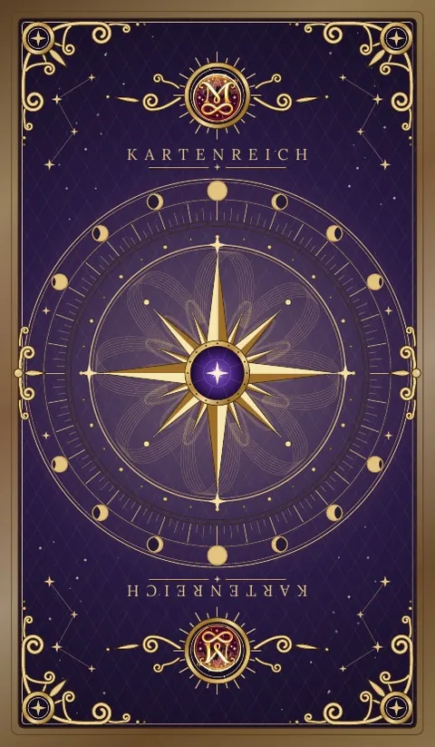

Das Buch zum Tarot-Deck
78 Karten verstehen
Blättere durch alle 78 Karten deines Decks. Jede mit ihrem Bild, ihrer Bedeutung und der Frage, die sie dir stellt.
Blättern mit den Pfeilen, den Pfeiltasten oder per Wischen.
Ruhige Musik, die im Moment entsteht und sich nie genau wiederholt. Wähle eine Stimmung.
Lege dir das Buch mit eigenem Icon auf den Desktop oder Startbildschirm. Es öffnet sich dann wie ein Programm und ist auch ohne Internet lesbar.
Kapitel I
Du hältst ein Deck in den Händen, das es so kein zweites Mal gibt. Jede der 78 Karten wurde für Kartenreich gestaltet: mit eigenen Bildern, eigenen Farben und einem Wort, das unten auf jeder Karte steht. Dieses Buch gehört genau zu diesen Bildern. Es erklärt dir nicht irgendein Tarot, sondern deines.
Vielleicht hast du schon einmal Karten gelegt und dich gefragt, warum die Bedeutungen in Büchern so wenig mit dem zu tun haben, was du vor dir siehst. Das liegt daran, dass die meisten Bücher für ein altes Standarddeck geschrieben wurden. Hier ist es anders. Wenn in diesem Buch steht, dass der Turm ein Leuchtturm ist, dann weil er auf deiner Karte ein Leuchtturm ist. Wenn ich schreibe, dass über der Zehn der Schwerter ein kleiner Keimling wächst, dann kannst du ihn suchen und finden.
Tarot ist für mich kein Blick in eine feststehende Zukunft. Es ist eine Sammlung von Bildern, die alte menschliche Erfahrungen erzählen: Aufbruch, Liebe, Verlust, Mut, Zweifel, Neubeginn. Wenn du eine Karte ziehst, hältst du dir eines dieser Bilder vor Augen und fragst: Was davon erkenne ich gerade in meinem Leben? Die Antwort findest du nicht in der Karte, sondern in dir. Die Karte hilft dir nur, genauer hinzuschauen.
Du brauchst für dieses Buch kein Vorwissen. Du brauchst Neugier, ein wenig Ruhe und die Bereitschaft, erst zu schauen und dann zu lesen. Alles andere wächst mit der Zeit.
Du kannst es von vorn nach hinten lesen wie eine Reise. Du kannst es aber auch als Nachschlagewerk nutzen: Karte ziehen, im Inhalt antippen, lesen. Jede Karte hat eine Doppelseite mit denselben Bausteinen:
Ein Tipp vorab: Leg dir ein Heft neben dein Deck. Was du selbst über eine Karte aufschreibst, wird dir mit der Zeit mehr bedeuten als alles, was in diesem Buch steht.
Kapitel II
78 Karten, zwei große Teile, vier Elemente
Ein Tarot hat immer 78 Karten. Sie teilen sich in zwei Gruppen, die man seit Jahrhunderten Arkana nennt, nach dem lateinischen Wort für Geheimnis.
Die 22 Großen Arkana tragen römische Ziffern und erzählen eine zusammenhängende Geschichte. Sie beginnt mit dem Narren, der lachend an der Felskante steht, und endet mit der Welt, wo eine Tänzerin im Lorbeerkranz schwebt. Wenn eine Große Arkana in deiner Legung liegt, geht es meist um etwas Grundsätzliches.
Die Kleinen Arkana zeigen die Bühne des Alltags. Sie sind nach den vier Elementen geordnet, und dein Deck macht diese Elemente in seinen Farben sichtbar.
Jede Zahl hat in allen vier Farben eine ähnliche Grundstimmung.
Bube, Ritter, Königin und König können für Menschen in deinem Leben stehen. Häufiger zeigen sie eine Haltung, die du selbst gerade einnimmst oder lernen darfst.
Unter jedem Kartennamen steht in deinem Deck ein einzelnes Wort, zum Beispiel Unschuld beim Narren oder Befreiung beim Teufel. Dieses Wort ist kein Urteil, sondern ein Schlüssel. Es zeigt dir, aus welcher Richtung Kartenreich auf die Karte schaut.
Oben auf jeder Vorderseite sitzt ein kleines rotes Medaillon mit goldenem Monogramm. Es verbindet alle 78 Bilder zu einer Familie. Die Rückseite ist so gestaltet, dass du nicht erkennen kannst, ob eine Karte aufrecht oder umgekehrt im Stapel liegt.
Kapitel III
Erst schauen, dann lesen
Du brauchst keinen besonderen Ort und kein Ritual. Ein freier Tisch, etwas Ruhe und ein paar Minuten genügen. Wenn das Deck neu ist, leg alle 78 Karten einmal in Reihen aus. Welche Karte zieht dich an? Welche ist dir unangenehm? Notiere beides.
Die Qualität einer Legung hängt fast immer an der Frage. „Wird er sich melden?“ lässt der Karte keinen Raum. „Was darf ich über diese Verbindung verstehen?“ öffnet ihn. Gute Fragen enthalten Wörter wie verstehen, erkennen, beachten, lernen oder beeinflussen. Schreib die Frage auf, bevor du mischst.
Misch so, wie es dir angenehm ist. Denk dabei an deine Frage, ohne dich zu verkrampfen. Hör auf, wenn es sich richtig anfühlt, und zieh die Karten von oben oder aus dem Fächer. Es gibt keinen falschen Weg.
Wenn du mit umgekehrten Karten arbeiten möchtest, nutze den Abschnitt Im Schatten. Eine umgekehrte Karte bedeutet nicht das Gegenteil. Sie zeigt dieselbe Kraft, nur gebremst, nach innen gekehrt oder übertrieben. Am Anfang darfst du alle Karten aufrecht legen.
Leg die Karte nicht zurück und zieh keine neue. Schreib sie auf und schau abends noch einmal drauf. Oft zeigt sich die Bedeutung erst im Nachhinein.
Notiere Datum, Frage, Karten und deinen Satz. Nach einigen Wochen erkennst du Muster: Karten, die immer wiederkommen, Farben, die sich häufen. Dieses Tagebuch ist das eigentliche Lehrbuch.
Kapitel IV
Die Reise vom Narren zur Welt
Die Großen Arkana lassen sich wie eine Geschichte lesen. Am Anfang steht der Narr, Karte 0, mit seinem kleinen Bündel und seinem weißen Hund. Er hat noch keine Nummer, weil er überall sein kann.
Auf seinem Weg begegnet er zuerst den großen Lehrern. Der Magier zeigt ihm, was er kann, die Hohepriesterin, was er ahnt. Herrscherin und Herrscher stehen für Wachstum und Ordnung, der Hierophant für das Überlieferte. Dann muss der Narr selbst wählen, bei den Liebenden, und losfahren, im Wagen.
In der Mitte wird es stiller und tiefer: Kraft, Eremit, Schicksalsrad, Gerechtigkeit und der Gehängte. Dann kommen die großen Verwandlungen: der Tod, der in deinem Deck in den Sonnenaufgang reitet, die Mäßigkeit, der Teufel, den euer Deck Befreiung nennt, und der Turm als Leuchtturm im Gewitter.
Nach dem Sturm folgen die Lichtkarten: Stern, Mond und Sonne. Zuletzt ruft der Engel des Gerichts zum Neuanfang, und in der Welt schließt sich der Kreis.
Wo auf dieser Reise stehst du gerade?
Kapitel IX
Von einer Karte bis zum ganzen Jahr
Eine Legung ist eine Frage, die in mehrere kleinere Fragen aufgeteilt wird. Jeder Platz hat eine Aufgabe. Drei gut gelesene Karten sagen mehr als zehn überflogene.
Für jeden Morgen
Zieh morgens eine Karte mit der Frage: Worauf darf ich heute achten? Abends schaust du zurück: Wo ist dir das Thema begegnet?
Die Kartenreich-Legung für den Einstieg
Wenn du handeln willst
Formuliere zur dritten Karte einen Satz, der mit „Ich kann …“ beginnt.
Wenn zwei Wege vor dir liegen
Die Entscheidung triffst du, nicht das Deck.
Für Beziehungen, ohne Gedanken zu erraten
Für eine Frage, die mehr Tiefe braucht
Zum Jahreswechsel oder Geburtstag
Zwölf Karten, eine für jeden Monat, dazu eine dreizehnte als Überschrift für das Jahr. Lies sie als Thema, dem du im jeweiligen Monat Aufmerksamkeit schenkst, nicht als Vorhersage.
Viele Große Arkana zeigen ein grundlegendes Lebensthema. Viele Stäbe bringen Tatendrang, viele Kelche Gefühle, viele Schwerter Gedanken und Klärung, viele Münzen das Praktische. Mehrere Hofkarten zeigen, dass andere Menschen stark beteiligt sind.
Kapitel X
Früher oder später ziehst du eine Karte, bei der dir kurz der Atem stockt. Der Tod. Der Turm. Der Teufel. Die Zehn der Schwerter. Diese Bilder sind dunkel, und das dürfen sie sein. Aber sie sind keine Katastrophenmeldungen.
Schau in deinem Deck genau hin. Der schwarze Ritter des Todes reitet in einen Sonnenaufgang, auf seiner Fahne blüht eine weiße Rose. Der Turm ist ein Leuchtturm, und hinter den Gewitterwolken sieht man schon die Sterne. Der Teufel trägt das Wort Befreiung. Über der Zehn der Schwerter wächst ein grüner Keimling.
Wenn dich eine Karte erschreckt, stell ihr drei Fragen:
Und zieh nicht so lange neu, bis eine freundlichere Karte erscheint. Die unbequeme Karte ist oft die ehrlichste.
Bei Fragen zu Gesundheit, Recht oder Geld gehören fachkundige Menschen an die erste Stelle. Die Karten helfen dir, deine Gedanken zu sortieren. Einen Rat ersetzen sie nicht.
Nachwort
Du bist jetzt einmal durch alle 78 Karten gegangen. Vielleicht hast du jede gelesen, vielleicht nur ein paar. Beides ist in Ordnung. Dieses Buch soll neben deinem Deck liegen und dich begleiten, so lange du möchtest.
Mit der Zeit wirst du immer seltener nachschlagen. Du wirst eine Karte ziehen und wissen, was sie dir sagen will. Das ist der Moment, in dem dein eigenes Kartenreich entstanden ist.
Wenn du Schritt für Schritt üben möchtest, gibt es zu diesem Deck das Arbeitsbuch Kartenreich · Transformation. Es führt dich in 21 Tagen von der ersten Karte bis zu deiner eigenen Legung.
Ich wünsche dir viele gute Fragen.
Frank Zimmermann